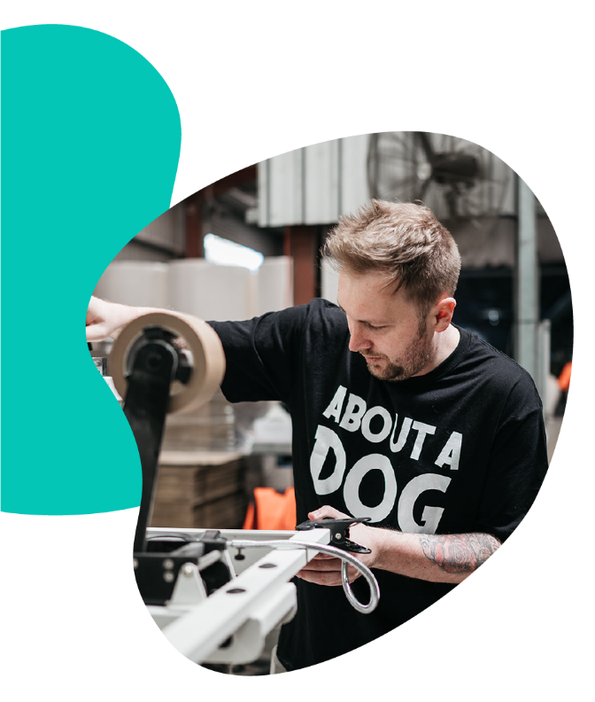
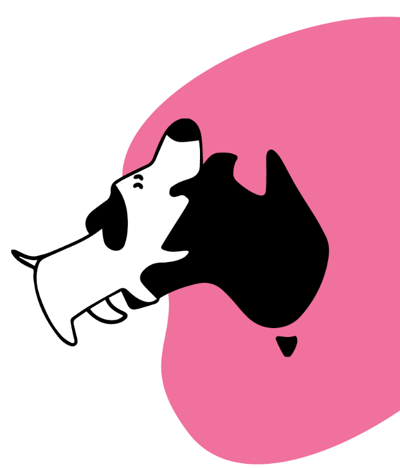
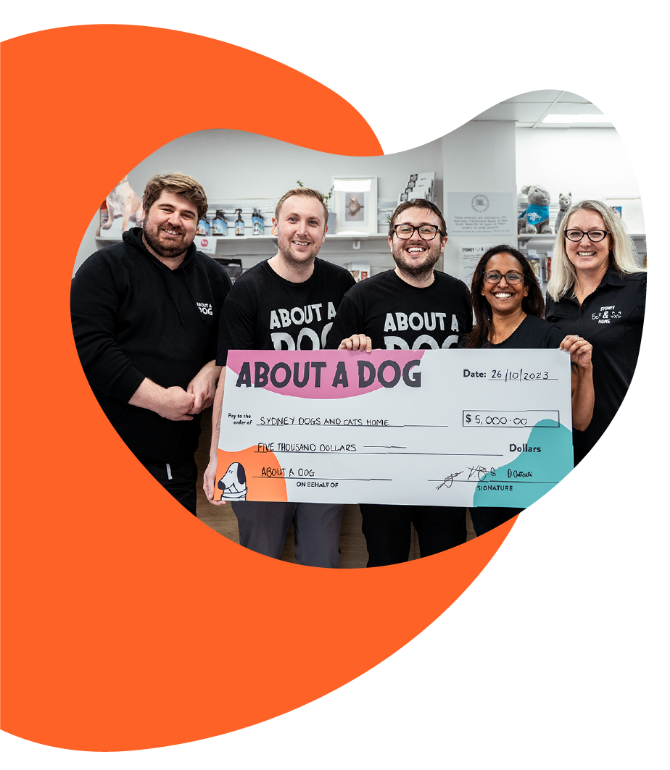
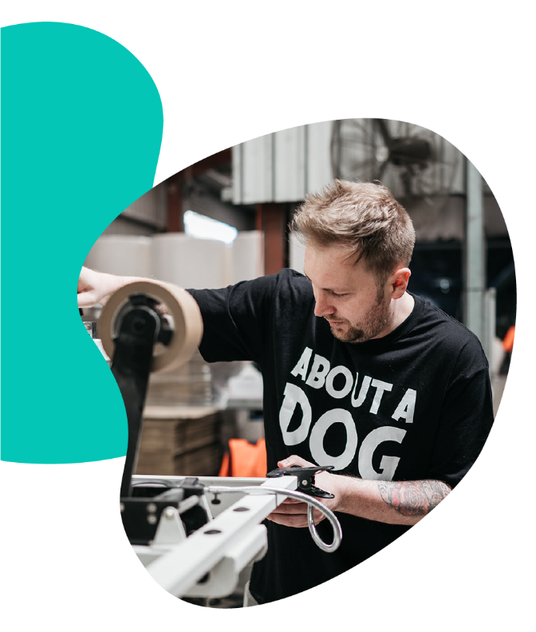
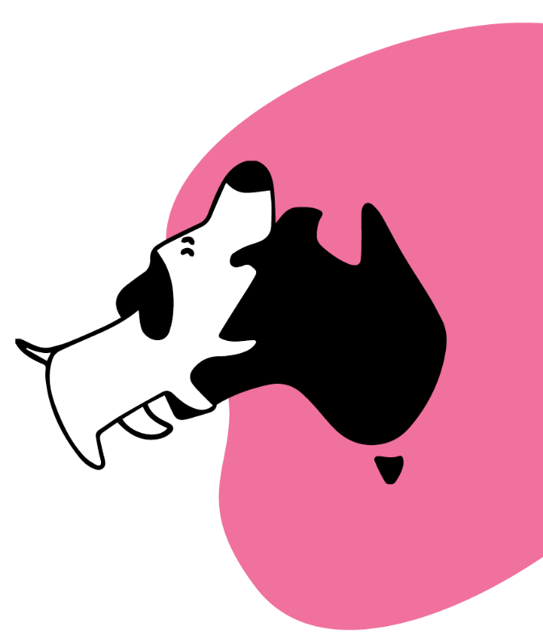
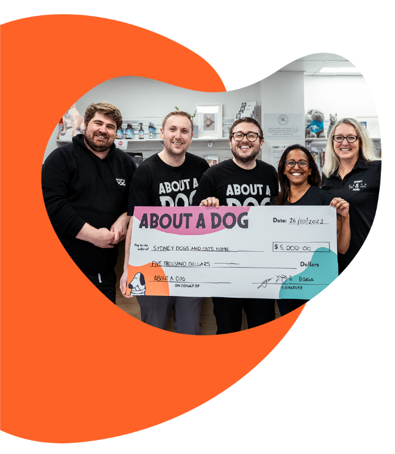

We started About A Dog, partially because we we'd knew we wouldn’t have made very good doctors (much to the disappointment of our parents). But we had also identified a gap in the market; for Aussie made, 100% recycled toilet paper that did some good in the world.
Most toilet rolls sold in Australia are made overseas. But our products are proudly made in Australia, in partnership with a small local manufacturing business. Why? Well because Australia is pretty awesome. We've got Uluru, the Blue Mountains, Ash Barty... and now, some of the finest, softest, toilet rolls ever made.
It was important to us to keep our business local, meaning more Aussies jobs and support for Aussie families. And when our manufacturers are also our neighbours, we can meet down the pub for a beer. Better and better.
Approximately 200,000 dogs are admitted to shelters and municipal rescue facilities each year in Australia. And even though the folks at all the amazing shelters are pretty great, they can’t do it alone. They succeed because of generous supporters whose time and money help them care for, treat, protect, and rehome animals across the state.
We donate 50% of all our profits to organisations helping animals in need because it feels damn good to support their work. And every time you buy a loo roll from us, you’re helping an animal too.
We’re a new company. But we’re going big places.
We’d love to come along for the ride. We’ll bring the beer.
   
   
Subscription Login
All Products
Blogs
Stockists
Wholesale
Contact Us
Shipping Details
Return Policy
Privacy Policy
Terms
About A Dog Pty Ltd
11 Ashford Avenue,
Milperra, NSW 2214